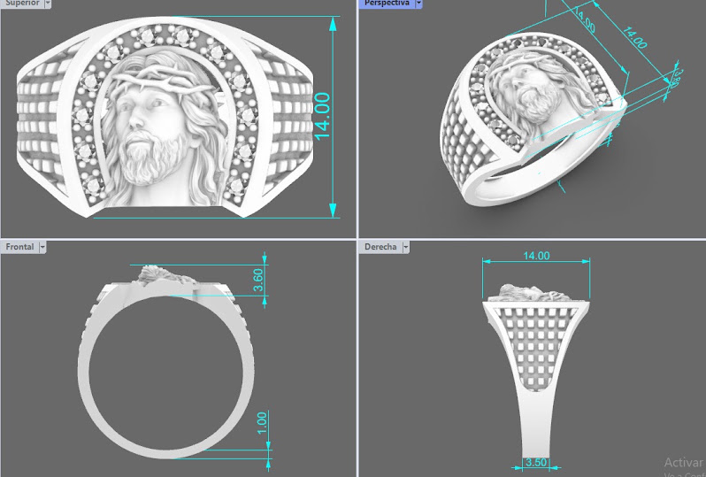
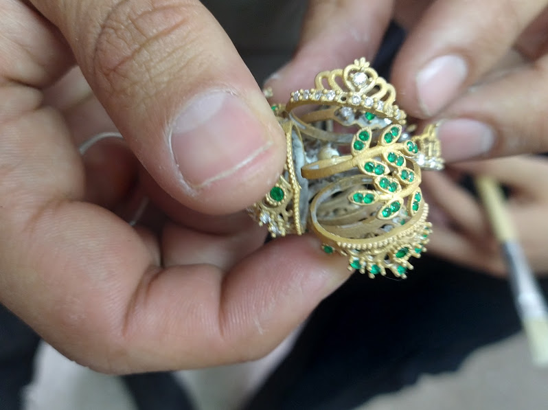

Antes de convertirse en una joya, cada pieza nace de una idea.
Analizamos formas, proporciones, materiales y detalles para desarrollar diseños que representen la identidad de Oro del Sol y respondan a las necesidades de nuestros clientes.
Una vez definida la idea, desarrollamos el diseño de la pieza, determinando sus características, proporciones, acabados y detalles.
Cada decisión busca lograr una pieza equilibrada, estética y funcional.
A partir del diseño inicial, podemos desarrollar una representación tridimensional de la pieza para visualizar sus características y definir con mayor precisión sus medidas y proporciones antes de pasar a la producción.

El diseño se materializa mediante el proceso de elaboración del molde y la preparación de la pieza.
Cada detalle debe ser cuidadosamente trabajado para que el resultado conserve las características definidas durante la etapa de diseño.
La pieza pasa por las diferentes etapas de producción, donde se trabaja su forma, superficie y acabado.
Posteriormente se realizan procesos de pulido y abrillantado para conseguir el aspecto final de la joya.

Cada pieza es revisada antes de llegar al cliente.
Verificamos aspectos como su acabado, detalles, medidas y presentación para procurar que el producto cumpla con los estándares de calidad establecidos por Oro del Sol.
Porque detrás de cada joya hay un proceso que merece el mismo cuidado que el resultado.